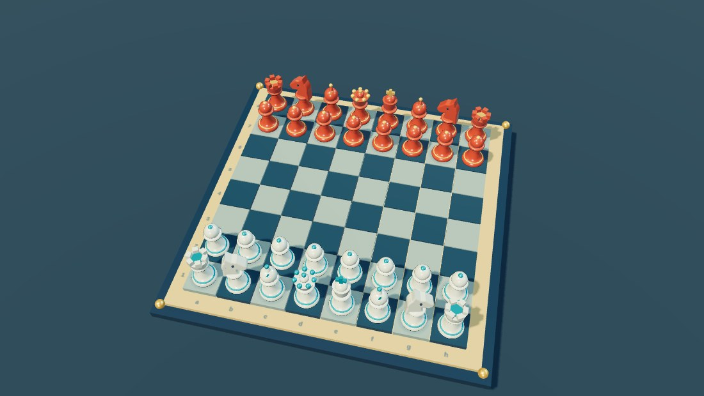
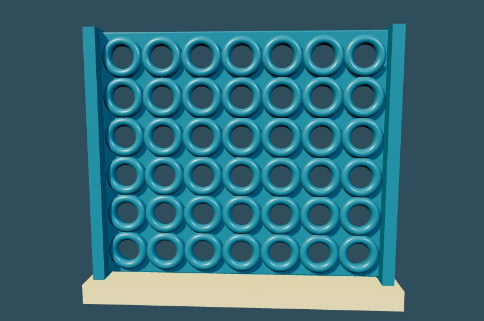

THE TABLETOP COLLECTION · PLAY ANYWHERE
Small games.
Big moves.
A little space to think, challenge a friend, or play one more round. No download needed.

↗
Chess
The classic strategy game. Computer or two players.

↗
Checkers
Plan the jump. Claim the crown. American rules.

↗
Connect Four
Seven columns. Four in a row. One smart move.
One Minute Pop
A quick 2D target-tapping break.
Add to your home screen for offline play. Sound and lite effects can be changed inside each game. Chess currently promotes pawns to a queen.